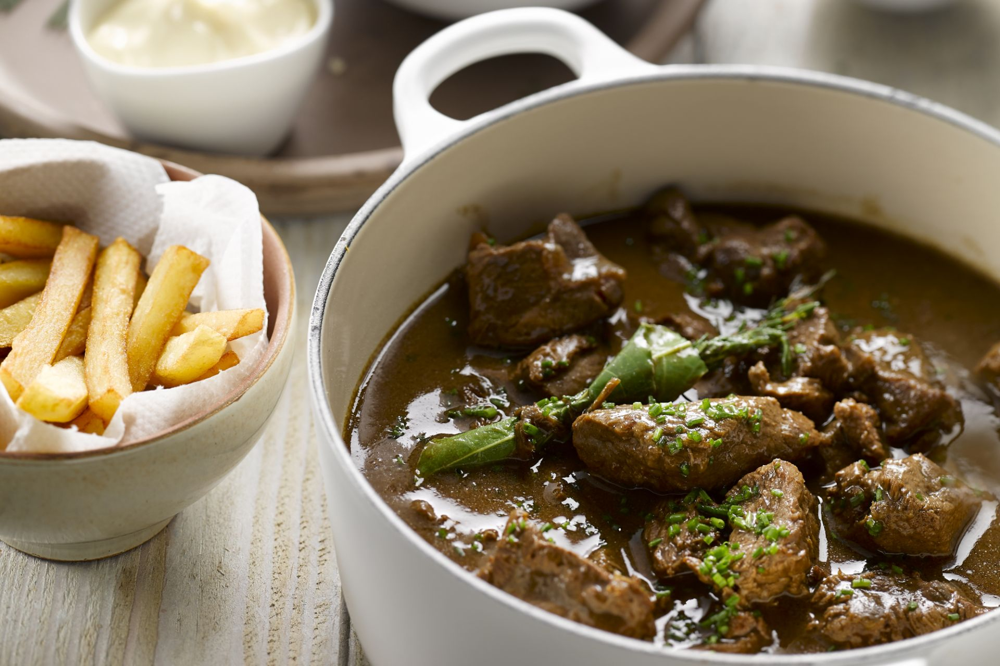

De best stoofvlees die je ooit zul eten!

Ingredienten
- 2 grote uien
- boter
- grof zout en peper
- 1kg rundvlees
- 2 flesjes bruin bier
- olijfolie
- 2 stukjes peperkoek
- mosterd
- aardappelen
- 3 wortels
Bereiding
- Pel de uien en snipper ze in niet al te fijne stukjes samen met de wortels.
- Verhit een ruime stoofpot en smelt er een klontje boter in. Stoof daarin de uien en de wortels op een matig vuur. Laat de uien niet bruin bakken.
- Haal de inhoud van de stoofpot uit in apparte schaal.
- Voeg een klontje boter toe in de stoofpot, plaats het rundvlees dan in de stoofpot en bak ze tot ze een mooi goudbruine kleur krijgen aan de buitenkant.
- Voeg de uien en de wortels weer bij het vlees op een laag vuurtje.
- Verwarm het bier in een aparte sauspan, eens het bier warm is (niet kokend) kan je het bier toevoegen in de stoofpot.
- Smeer boter op de 2 peperkoeken.
- Plaats het peperkoek met de kant van de mosterd naar beneden toe in de stoofpot.
- Bedek de stoofpot en laat het op een middelmaatig vuurtje verder koken tot het dikker wordt.
- Snij je aardappelen in frietvormen en zet ze daarna in een schaal met koud water.
- Na 45min kan je de aardappelen op een droog handdoek plaatsen zodat het extra water weg gaat.
- Bak de aardappelen voor de eerste keer in olie op 160°C.
afwerken en serveren
- Bak de frietjes voor de tweede keer in olie op 180°C.
- Schenk een mooie lepel stoofvlees in een bord met de vrietjes ernaast geserveerd<./li>
- Geniet van de stoofvlees!